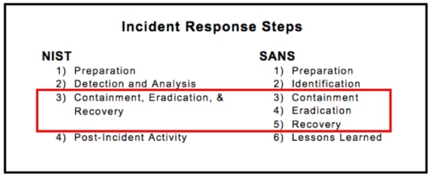
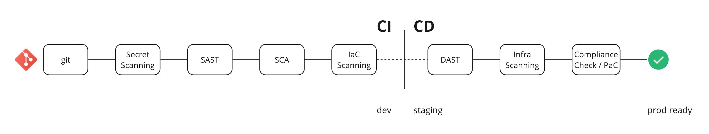
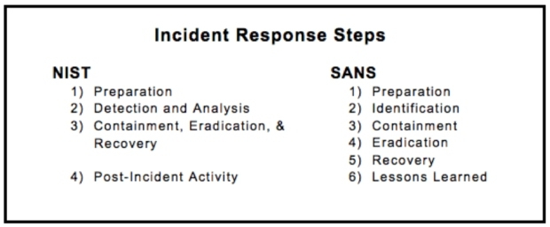

Chapitre 5 Etat de l'art de l'automatisation des processus de sécurité
5.1 Contexte sur l’automatisation des processus de sécurité
5.1.1 La sécurité informatique
Pour contextualiser notre sujet, revenons aux origines et définissons la sécurité informatique.
L'objectif de l'informatique est la gestion automatique de l'information et la sécurité informatique implique la sécurité de l'information c'est-à-dire le maintien de la confidentialité, intégrité et la disponibilité de ces informations. Ces trois points sont les piliers de la sécurité informatique. Le principe de confidentialité stipule que l’information ne doit être accessible qu’aux personnes autorisées, l’intégrité est la garantie que l’information ne soit pas corrompue, dégradée ou modifiée et la disponibilité est l’assurance que l’information soit accessible aux personnes autorisées au moment où elles en ont besoin.
La sécurité de l’information n’est pas figée, elle est plutôt le résultat d’un processus d’amélioration continue, c’est-à-dire qui évolue à travers différentes phases et se perfectionne tout le long. Il s’agit d’un voyage et pas une destination. Bien qu’il y ait de nombreuses étapes dans ce voyage nous pouvons néanmoins les regrouper dans trois grandes phases : la prévention, la détection et la réponse (incluant la remédiation) (LaPiedra, 2002).
5.1.1.1 La prévention
La prévention consiste à se préparer en amont pour se prévenir de futurs incidents. Notre objectif est de protéger l’information de toutes dégradations, altération ou accès non autorisé. Pour cela la phase de prévention implique :
La définition de politiques de sécurité : savoir ce qui doit être protégé en décrivant des règles claires, concises et précises.
La mise en place d’un programme de sensibilisation à la sécurité de l’information pour éduquer toute l’équipe aux bonnes pratiques de sécurité et aux risques que court l’organisation
L’implémentation des contrôles d’accès : restreindre l’accès et n’autoriser que les permissions nécessaires à la fonction de l’utilisateur. Identifier correctement les principes d’identification, authentification et autorisation dans chaque processus d’accès.
5.1.1.2 La détection
Se protéger est idéal mais détecter est indispensable. Tout système d’information est vulnérable et sujet à compromission. Keith Alexander, général de la United States Army et directeur de la National Security Agency (NSA) affirme durant la U.S. Chamber of Commerce Cybersecurity Summit en 2012 :
Either you know you’ve been hacked, or you’ve been hacked and you don’t know you’ve been hacked
que nous pouvons traduire par : soit vous savez que vous avez été attaqué soit vous avez été attaqué mais vous ne le savez pas encore. En effet, peu importe le niveau de protection d’un système d’information, ce n’est qu’une question de temps avant qu’il ne soit compromis par un acteur ayant assez de compétences et de motivation. D’où l’importance d’un système de détection de d’intrusion et de compromission (IDS). Le facteur le plus crucial dans une stratégie de détection est le temps moyen entre l'infection et la détection ajoutée à la précision de la notification en cas de compromission : une détection plus rapide et une notification plus précise amélioreront l'efficacité du processus d'investigation et de réponse en cas d'incident.
5.1.1.3 La réponse

La réponse consiste à réagir face à l’annonce d’un nouvel incident ou d’une compromission. La phase de réponse donne toute sa valeur à une détection de qualité. Néanmoins, une bonne réponse ne s’improvise pas. Le stress que nous ressentons lors d’une attaque ne permet pas de prendre de bonnes décisions. Il existe des méthodologies de réponse à incident permettant d’adapter son plan de réponse à son métier et à l’incident subit. Celui du NIST (National Institute of Standards and Technology) et du SANS se distingue dans le schéma suivant.
Nous commençons toujours par l’étape de préparation qui se déroule en général avant l’arrivée de l’incident. La détection arrive ensuite, nous devons identifier et analyser le type d’attaque que nous subissons, son origine et idéalement l’auteur de l’attaque. Après cela le confinement vise à réduire l’impact de l’incident, l’éradication à supprimer la menace du système d’information et la reprise à remettre le système en condition opérationnelle. Enfin la dernière étape consiste toujours à faire une revue de la gestion de l’incident et sert à améliorer le processus de réponse en lui-même.
Une bonne réponse à incident nécessite un processus rapide qui aboutit à une remédiation dans un court laps de temps. Au-delà d’une succession optimale des étapes susmentionnées, nous devons noter que la vitesse de ce processus passe par une remontée efficace des informations nécessaire à l’équipe lors de la détection même l’incident. Le SANS précise que
The process of detecting malicious or accidental misuse of resources is much more than sounding an alarm. Also, responding to an incident is much more than just showing up. An organization to be successful must know what to detect and once alerted know how to effectively coordinate resources for a response.
Pour poursuivre, une bonne détection est de même liée à une préparation et une prévention correcte. Là se trouvent les principaux maux de la sécurité informatique :
Ils prennent du temps
Ils nécessitent beaucoup de bande passante (de charge de travail, de personnes qualifiées)
Ils sont coûteux en ressources et en argent
Cela décourage certaines organisations à entamer le voyage dont nous parlons. Comment donc faire en sorte de corriger ces barrières tout en facilitant l’adoption des pratiques de sécurité ? Chez Shadow nous avons un programme de sécurité établi par Florent notre responsable sécurité. Après avoir fait l’état des lieux et défini les politiques nécessaires et les actions à prendre pour commencer notre voyage, ce dernier inclut une phase d’automatisation des processus de sécurité au sein du cycle de développement mais également dans les tâches quotidiennes de l’équipe en charge de la sécurité.
5.1.2 Les processus de sécurité automatisées
Dans un monde idéal, nous n'aurions pas à répondre à des incidents ou, du moins, nous n'aurions qu'à traiter des incidents dignes de notre attention. L'une des solutions pour parvenir à ce monde idéal serait d'automatiser les processus répétitifs.
Le docteur Brian Carrier définit l’automatisation en disant :
Automation is when the computer does the next step without human intervention1
De ce fait l’automatisation des processus de sécurité permettrait :
Une réduction des tâches manuelles de bas niveau : pour libérer du temps à l'équipe sécurité et lui permettre de se concentrer sur les tâches nécessitant plus d'attention.
Une réponse rapide aux incidents : pour réduire le MTTD (Mean Time To Detect — temps moyen de détection) et le MTTR (Mean Time To Repair — temps moyen de réparation) comme expliqué plus haut.
Une standardisation des processus : car une plateforme automatisée suivra toujours les règles que nous lui donnons, éliminant ainsi les erreurs d'opérations manuelles et apportant de la cohérence.
Un gain de productivité général pour l'équipe.
Cependant, l'automatisation n'est pas l'unique option. Les autres solutions consistent à optimiser la réalisation des processus en améliorant ceux qui en dépendent. Par exemple, nous pouvons limiter le temps de réponse à un incident en maximisant les indicateurs que nous remontent nos systèmes de détection d'intrusion (IDS). Nous pouvons également élever le niveau de notre détection en connaissant profondément notre système d'information. En effet, une connaissance parfaite de son SI et de ses services permet de configurer finement ses outils de détection et de remonter les événements. En continuant avec cette idée, on éviterait le nombre d'événements remontés en prévenant le nombre de vulnérabilités dans nos applications, réduisant ainsi notre surface d'attaque et, par transitivité, le risque auquel nous sommes soumis. D'où l'importance de la phase de prévention.
Une grosse partie de la prévention est de faire en sorte que les applications et logiciels que nous sortons soient sécurisés, nous arrivons donc à la sécurisation du cycle de développement.
5.1.3 Le cycle de développement sécurisé
Tenant ses origines des années 1960, la sécurité dans le SDLC — Software Development Lifecycle — et toutes les méthodologies s’en inspirant, quand elle est incluse, se positionne comme un jalon la gestion de projet entre certaines étapes du SDLC. Une porte à franchir pour passer à l’étape suivante. Nous avons généralement dans les équipes soucieuses de la sécurité de leur produit
La revue des spécifications et de la conception du produit : après l’étape d’identification
La revue de l’architecture : après l’étape de conception
La revue du code : après l’étape de création ou développement
Les tests de sécurité : après l’étape des tests.
Laura Bell précise dans son livre Agile Application Security que l’idée derrière ces jalons soit de réaliser des livrables en lot car
It is predicated on the old rule that the earlier a defect is caught, the cheaper it is to fix; therefore we need to do a security review as early as possible to catch security defects before they get too far. (Bell, Brunton-Spall, Smith, & Bird, 2017, p. 79)
Sauf que notre problématique persiste. Effectivement, les processus et pratiques de sécurité telles que nous les connaissons ont été conçues pour une gestion de projet en cascade où les besoins sont décidés bien avant et pas pour des petites équipes évoluant rapidement et de manière itérative.
En optant pour une approche Agile, la solution ne consisterait pas à résoudre tous les problèmes de sécurité avant la mise en production, mais plutôt à se concentrer sur la réduction du coût de correction, en rendant les futurs changements sans risque et plus facilement réalisables.
We want to reach a fine balance between finding and fixing (or better, preventing) security problems up front where it makes sense to do so, and making sure that we can fix them quickly and cheaply later if something gets by. (Bell, Brunton-Spall, Smith, & Bird, 2017, p. 79)
La première approche pour répondre à cela est l’apparition du principe Shift Left2, c’est-à-dire inclure des tests de sécurité à chaque étape du SDLC. Nous obtenons ce dont les experts appellent le SSDLC — Secure Development Lifecycle — ou SDL pour faire court. (Voir annexe 1)
Une approche plus récente avec la montée en charge des pratiques DevOps et l’augmentation exponentielle des menaces de sécurité, permet d’aller encore plus loin et favorise les entreprises à se préparer et à actualiser fréquemment l’ensemble de ses processus de sécurité de la prévention à la réponse : le modèle DevSecOps avec un accent particulier sur l’automatisation.
Dans le parcours de la sécurité chez Shadow, j’ai eu l’honneur d’avoir la responsabilité de mettre en place certaines de ces pratiques. Cependant, maintenant que nous savons pourquoi l’automatisation peut être un acteur positif à l’évolution des processus de sécurité, découvrons ce qui se fait de mieux avant d’aborder concrètement les actions menées au sein de notre organisation.
5.2 Introduction à l’automatisation
Avant de parler d’automatisation et de pratiques DevSecOps, nous devons savoir Quoi automatiser et Quand automatiser. Mentionné plus tôt, le Dr. Brian Carrier défini trois niveaux d’automatisation pour compléter sa définition
Manuelle : c’est-à-dire aucune présence de quelconque automatisation.
Partielle : une automatisation présente mais ayant besoin de quelques interactions humaines.
Totale : définissant un processus totalement automatisé.
Quand nous souhaitons automatiser, nous devons choisir le niveau d'automatisation selon que :
le bénéfice qu’apportera la réalisation automatique de la prochaine étape du processus soit assez élevé
le coût humain, logiciel et matériel de la mise en place du processus automatique soit abordable dans notre contexte
la probabilité qu’une erreur survienne et son impact extérieur à son contexte soit acceptable
Sachant que plus une automatisation devient complexe, plus le besoin en ressources matérielles et en maintenance se fait grand, nous devons évaluer ces paramètres non seulement au début de la phase de réflexion de la mise en place de notre processus automatisé mais aussi à chaque fois que nous souhaitons faire évoluer notre niveau d’automatisation.
En ce qui concerne le cycle de développement notre objectif en faisant du Shift Left est d’accompagner le développeur et de lui faire un retour continu sur son code. Voyant ce que nous apporte le DevSecOps sur ce chemin.
5.3 Prévention et DevSecOps
Plus qu’une recette miracle ou un terme new age, le DevSecOps est une approche et une philosophie qui comme les principes Agiles favorise la collaboration entre les équipes dans l’objectif de détecter au plus tôt les problèmes de sécurité et les vulnérabilités diverses. L’OWASP dit dans le projet OWASP DevSecOps Guideline
The Ideal goal is “detect security issues (by design or application vulnerability) as fast as possible.”3
On peut voir le DevSecOps comme une aide et un ensemble de bonnes pratiques dans la mise en place d’un cycle de développement sécurisé.
5.3.1 Culture DevSecOps
Le terme DevSecOps suppose l’engagement des équipes développement, sécurité et opérationnelle. Sauf que cette approche va au-delà de la définition même de ces équipes et implique tous les métiers agissant sur le cycle de développement pour les rendre responsables de la sécurité : du chef de projet aux développeurs en passant par les designers, les architectes, etc. De plus Shannon Lietz — fondateur de la DevSecOps Foundation dit
The purpose and intent of DevSecOps is to build on the mindset that “everyone is responsible for security” with the goal of safely distributing security decisions at speed and scale to those who hold the highest level of context without sacrificing the safety required.”4
Pour cela, nous devons sensibiliser nos équipes à la culture DevSecOps et mettre en place des outils pour parvenir à une stratégie de Shift Left performante. L'étape préalable consiste à comprendre l'importance d'un esprit de collaboration, ce qui constitue une base solide pour le partage des bonnes pratiques de sécurité au sein des équipes. Cela facilite également le travail des équipes de sécurité dans la compréhension de leurs politiques par les collaborateurs. D’où la nécessité d’un programme de sensibilisation à la sécurité informatique. Notamment la compréhension des vulnérabilités venant des standards comme le OWASP Top 10 ou le CWE top 25.
5.3.2 Comprendre son besoin en sécurité

Avant de se lancer dans un programme de mise en place de pratiques DevSecOps une organisation doit prendre en compte son niveau de maturité pour pouvoir formaliser son besoin de sécurité et pouvoir le traduire en tant que processus automatisé. Un article de Shannon Lietz présente une pyramide pour hiérarchiser les besoins en sécurité d’un logiciel à la manière de la pyramide de Maslow.5
Hiérarchiser ses besoins permet de mieux répartir nos efforts dans la mise en place de politique de sécurité. Nous l’avons dit, la sécurité informatique n’est pas figée, ainsi nos politiques doivent être faites selon la culture, les objectifs et les politiques organisationnelles de l’entreprise. De la même manière notre approche vers l’automatisation de nos processus de sécurité ne doit pas être figée à un unique standard. Nous devons prendre en compte les contraintes de chaque outil avant de faire notre choix, s’assurer que toute l’équipe adopte un schéma de pensé aligné avec l’idée de ne pas faire de choix qui sembleraient couvrir tous les besoins existant mais plutôt s’orienter vers des solutions qui répondent à un besoin particulier. Par exemple choisir un outil pour un langage de programmation spécifique quand cela est pertinent plutôt qu’un autre promettant de réaliser un traitement sur tous types de langage mais sans réelle efficacité.
Il existe des outils qui nous aident dans l’évaluation de notre niveau de maturité et nous permettent de savoir comment hiérarchiser nos besoins.
L’OWASP Software Assurance Maturity Model (SAMM) par exemple est un cadre qui a pour objectif d’accompagner les organisations à formuler et à mettre en place une stratégie de sécurité logicielle parfaitement adaptée aux risques spécifiques auxquels l’organisation est confrontée.
L’OWASP DevSecOps Maturity Model (DMM) est l’équivalent du SAMM pour les pratiques DevSecOps, ce cadre évalue le niveau de mise en place de pratiques DevSecOps au sein de l’organisation, nous aidant à hiérarchiser nos besoins dans notre approche de sécurisation de notre cycle de développement.
5.3.3 Conception sécurisé et industrialisation des tests
Une fois qu’une culture de collaboration est établie et que nous savons où orienter nos efforts, nous devons accompagner l’équipe de développement dans la réalisation de sa tâche tout en l’aidant à livrer une application sécurisée. Laura Bell dit dans Agile Application Security
Security teams that try to reduce risk by minimizing change, rather than supporting development teams to realize their ideas in a secure way, are doomed to be increasingly irrelevant in an Agile world, and will therefore be bypassed.
\[...\] Security professionals have to learn to accept change, to work faster and more iteratively, and be able to think about security risks, and how to manage risks, in incremental terms. And most important, security needs to become an enabler, instead of a blocker. (Bell, Brunton-Spall, Smith, & Bird, 2017, p. 76)
Dans cette direction, qui s’aligne avec le fait de prévenir la découverte de vulnérabilités au plus tôt, notre rôle revient à se retrouver dans le quotidien de l’équipe de développement et au sein de ses outils. Cela se traduit notamment dans la mise en place
de revue de code sécurisé
d’un programme de Security Champion, qui est collaborateur de l’équipe ayant un rôle de développeur ou d’opérationnelle en charge de partager une culture de sécurité et de s’assurer du respect des politiques de sécurité lors des développements.
de tests de sécurité directement dans les cycles d’intégration et de déploiement continu (CI/CD)
Le modèle OWASP d’un cycle de livraison continu adapté aux tests de sécurité se présente grossièrement comme suite

Ces étapes consistent concrètement à :
Parcourir les dépôts git à la recherche d'identifiants ou de valeurs secrètes exposés publiquement.
Analyser le code source de l'application ou du logiciel à déployer pour découvrir de potentielles vulnérabilités (Static Application Security Testing — SAST).
Analyser l'ensemble des composants et librairies dont dépend le code source pour se prémunir des risques de sécurité liés à la compromission de ces derniers (Software Component Analysis — SCA).
Réaliser des tests de sécurité sur l'application pendant qu'elle s'exécute, similaire à une activité de tests de pénétration en boîte noire. L'objectif est de retrouver des failles et des vulnérabilités donnant des accès non autorisés aux données (Dynamic Application Security Testing — DAST).
Analyser le code destiné à la création dynamique de l'infrastructure pour éviter les erreurs liées à une mauvaise configuration ou une implémentation inadéquate (Infrastructure as Code Scanning — IaC).
Analyser l'infrastructure en elle-même pour vérifier l'exposition et la surface d'attaque de l'environnement.
Tester l'application des politiques définies et la conformité aux différents standards liés à notre industrie (Compliance Check).
Ces dernières se réalisent bien évidemment de manière automatique pour apporter un retour continu aux développeurs dans la correction des vulnérabilités remontées. Mais l'automatisation ne s'arrête pas là. Nous verrons dans la suite que nous pouvons encore faire évoluer l'automatisation de certains de nos processus, mais également quels outils nous permettront d'implémenter ces actions, notamment dans le contexte de Shadow.
Le guide OWASP DevSecOps Guideline6 détaille chacune de ces étapes et apporte des clés et des outils en source ouverte pour nous aider dans notre démarche.
5.3.4 Surveiller continuellement
De nos jours, les attaquants ne cessent de renouveler leurs techniques d'attaque en profitant du principe de confiance établi entre les environnements et les composants de notre système d'information et ceux de nos organisations partenaires. Certaines méthodes non conventionnelles prolifèrent, notamment en prenant avantage des services en SaaS et en Cloud, car l'attaquant peut facilement s'y introduire et se servir de la base de confiance que nous avons en ces services pour pénétrer au sein de notre environnement. C'est le principe d'une attaque en Supply Chain. Ce genre d'attaque est difficile à reconnaître et donne aux attaquants un bon moyen de contourner les outils de détection mis en place. De plus, nos environnements ne sont pas encore prêts pour les détecter. De la même manière que les méthodes d'attaque évoluent, les techniques de détection doivent évoluer. En effet, de la détection d'intrusion réseau et machine que nous connaissons, nous devons tendre vers une détection proche de la logique de l'application et du logiciel en cours de développement. Shannon Lietz dit :
The natural evolution of security is from network to host to software.
C'est-à-dire étudier et comprendre comment notre produit fonctionne et est utilisé pour faire remonter les comportements déviants. Cela implique un développement qui prend en compte une récolte de données importante et pertinente pour une investigation.
Surveiller continuellement, c'est instrumentaliser l'analyse de ces données pour avoir une vision claire du comportement de notre produit en permanence. Cela nécessite un investissement de temps et d'efforts pour comprendre quels sont ces comportements déviants à l'utilisation normale de notre application dans un premier temps, puis comment implémenter les logiques de détection de ces comportements au sein de nos outils. Par exemple, quand nous avons une application d'administration conçue pour être utilisée entre 8 h et 17 h et qu'un utilisateur se connecte à 00 h, nous devons journaliser cet événement de manière particulière pour permettre aux outils de sécurité de lancer une alerte et déclencher une intervention. Pour aller plus loin dans le processus d'automatisation, dans certains cas, l'application peut être conçue et développée pour s'auto-remédier face à ce type de comportement pré-identifié.
En somme, ces pratiques issues de l'approche DevSecOps nous permettent de Shift Left, c'est-à-dire détecter les causes d'un manque de sécurité au plus tôt dans le cycle de développement. Comme dit le manifeste DevSecOps :
We will not wait for our organizations to fall victim to mistakes and attackers. We will not settle for finding what is already known; instead, we will look for anomalies yet to be detected.
En réalisant tout cela dans notre phase de prévention de la menace, nous sommes déjà à l'abri de 99% des attaques courantes. Toutefois, comme nous l'avons déjà abordé, sans détection efficace, nous restons des cibles faciles pour des techniques d'attaque nouvelle génération. Voyons donc comment, en mettant en avant l'automatisation de nos processus, nous pouvons tendre vers l'optimisation de notre système de détection.
5.4 Détection de nouvelles menaces
La détection est une phase du cycle de sécurité d'une organisation dont l'objectif est d'identifier les menaces présentes au sein du système d'information ou du réseau de cette dernière. Ces menaces peuvent être présentes sous la forme de logiciels malveillants, d'une première prise de contact comme un phishing ou d'un premier accès au réseau, comme une analyse de ports ouverts. Ce processus devrait également être automatisé pour qu'il soit pleinement utile à l'équipe. En effet, beaucoup d'équipes réalisent encore aujourd'hui des investigations manuelles pour faire de la détection de bas niveau, ce qui est malheureusement sujet à des erreurs humaines et à un risque de non-détection de certaines menaces.
Automatiser la détection de menaces implique d'avoir un bon niveau de surveillance des événements sur les terminaux de notre système informatique. Cela va de pair avec une bonne stratégie de notification et réduction du temps à la détection de la menace. James LaPiedra dit dans un document de la certification GIAC du SANS :
defense in layers strategy should be deployed so when each layer fails, it fails safely to a known state and sounds an alarm (LaPiedra, 2002)
Cela devient encore plus vrai face à la montée croissante de nouvelles sortes d'attaques devenant de plus en plus complexes à identifier. D'un autre côté, les anciennes sont facilement identifiables grâce à leur signature particulière et leur schéma déjà bien connu. Dans ce contexte, nous avons tout à y gagner à faire confiance à des outils qui se chargent de ces tâches à notre place pour que nous puissions nous concentrer sur la levée de suspicions sur une menace ou l'identification de menaces plus critiques.
Beaucoup de solutions existent aujourd'hui pour nous accompagner dans cette phase, chacune à différents niveaux du système d'information.
5.4.1 Détection au sein du réseau
L'analyse du trafic réseau ou Network Traffic Analysis (NTA) est une pratique cruciale dans la sécurité d’un système informatique, visant à surveiller et à analyser le trafic réseau pour détecter les anomalies, les menaces et les comportements malveillants. En combinant diverses technologies, elle permet une détection et une aide à la réponse proactives aux incidents de sécurité.
Nous avons notamment
5.4.1.1 Les IDS
Les systèmes de détection d’intrusions (IDS), essentiels pour l'analyse du trafic réseau. Surveille le réseau et identifie les activités suspectes ou malveillantes. Comme Snort, un IDS open source très populaire qui analyse le trafic en temps réel et détecte diverses attaques et intrusions.
Chez Shadow nous avons pu mettre en place CrowdSec une solution de sécurité qui analyse les logs applicatifs pour détecter et prévenir les intrusions. Ne se limitant pas qu’à cette tâche, je la présenterai plus loin dans le contexte de la mise en place de détection de la menace au sein de Shadow.
5.4.1.2 La suite Elastic Stack (ELK)
Elastic Stack, également connu sous le nom de ELK (Elasticsearch, Logstash, Kibana), est une suite d'outils open source pour la gestion et l'analyse des données :
Collecte et ingestion de données (Logstash) : Agrège et traite les données de diverses sources.
Recherche et analyse (Elasticsearch) : Fournit des capacités de recherche et d'analyse performantes.
Visualisation des données (Kibana) : Permet la création de tableaux de bord interactifs pour visualiser et explorer les données de sécurité.
Le choix et l'intégration de ces technologies NTA permettent de renforcer la visibilité sur le réseau, d'améliorer la détection des menaces et de réagir rapidement aux incidents de sécurité, contribuant ainsi à une posture de sécurité globale plus robuste et réactive.
5.4.2 Détection au sein des terminaux du système informatique
Pour détecter les menaces sur nos terminaux de manière automatique nous avons les technologies de Détection et Réponse sur les Endpoints (Endpoint Detection and Response — EDR) et Détection et Réponse Étendues (EXtended Detection and Response — XDR). Elles sont cruciales pour la surveillance et la sécurisation des points d'accès réseau, des serveurs et des postes de travails de nos collaborateurs. Elles permettent de détecter, d'analyser et de répondre aux menaces de manière proactive, assurant une protection renforcée des infrastructures informatiques.
L'EDR se concentre sur la détection et la réponse aux menaces directement sur les endpoints (postes de travail, serveurs, appareils mobiles), utilisant des techniques avancées pour identifier les comportements suspects et les activités malveillantes mais également fournir des fonctionnalités adéquates pour enquêter sur les incidents de sécurité et prendre des mesures correctives.
- OpenEDR par exemple est une solution open source qui offre une visibilité complète sur les activités des endpoints, permettant de détecter et de répondre aux menaces en temps réel. OpenEDR est conçu pour être flexible et extensible, ce qui le rend adapté à une variété d'environnements de sécurité. Non seulement il détecte les menaces, mais il permet également aux administrateurs de comprendre l'ampleur des incidents et de mettre en place des réponses efficaces pour limiter les impacts.
L'XDR va au-delà de l'EDR en intégrant des données provenant de plusieurs sources de sécurité pour offrir une visibilité et une protection plus globales. Il combine des données de sécurité provenant des endpoints, des réseaux, des serveurs et des applications pour une vue holistique des menaces. Il permet une analyse centralisée des menaces et une réponse coordonnée à travers l'ensemble de l'infrastructure.
- Nous pouvons citer Wazuh comme plateforme open source qui offre des capacités de détection et de réponse étendues. Wazuh intègre des fonctionnalités de surveillance des fichiers, de gestion des configurations, de détection des anomalies et de réponse aux incidents, couvrant ainsi un large spectre de sources de données de sécurité.
L'utilisation de solutions EDR et XDR comme OpenEDR et Wazuh permet aux organisations de renforcer leur posture de sécurité en offrant une visibilité accrue et une capacité de réponse améliorée aux menaces. Ces technologies sont essentielles pour détecter et neutraliser les cyberattaques avant qu'elles ne causent des dommages significatifs. Chez Shadow nous avons fait le choix d’intégrer Wazuh à la gamme de nos outils de détection pour couvrir tous nos serveurs de données et machines virtualisées. Un sujet que nous développerons plus loin dans ce document.
5.4.3 Gestion des événements détecter
Bien que ces solutions de détection soient suffisantes ; la gestion des informations et des événements de sécurité ou Security Information and Event Management (SIEM) est une approche et une solution essentielle à avoir en matière de détection, elle combine la gestion des informations de sécurité (SIM) et la gestion des événements de sécurité (SEM). Elle permet une analyse en temps réel des alertes de sécurité, contribuant à la détection, la prévention et la réponse aux menaces et incidents de sécurité, tout en assurant la conformité réglementaire des organisations. Elle implique de récolter un grand nombre d’informations des différentes solutions intégrées et de les centraliser pour pouvoir les traiter proprement et faciliter le travail des analystes.
Voici un aperçu de quelques solutions SIEM majeures et leurs caractéristiques distinctives.
5.4.3.1 IBM QRadar
IBM QRadar est une plateforme SIEM de premier plan qui se distingue par :
Détection avancée des menaces : Utilisation de l'apprentissage automatique et de l'analyse comportementale.
Réponse intégrée aux incidents : Capacités de réponse rapides et efficaces.
Scalabilité : Adaptée aux grandes entreprises.
Gestion de la conformité : Conformité avec des normes telles que le RGPD, HIPAA et PCI-DSS.
5.4.3.2 SPLUNK
Splunk est réputé pour sa gestion des grandes quantités de données générées par les machines. Ses caractéristiques incluent :
Surveillance en temps réel : Alertes instantanées sur les menaces.
Ingestion de données polyvalente : Adaptabilité à divers environnements.
Recherche et visualisation performantes : Capacités de recherche approfondies et visualisations intuitives.
Tableaux de bord personnalisables : Suivi des indicateurs de performance spécifiques.
5.4.3.3 Datadog Cloud SIEM
Datadog Cloud SIEM, une solution native du cloud, offre :
Architecture native du cloud : Déploiement facile et évolutivité.
Surveillance unifiée : Intégration avec les autres services de Datadog.
Détection automatisée des menaces : Algorithmes d'apprentissage automatique pour la détection proactive.
Gestion des incidents : Outils efficaces pour une réponse rapide.
Avoir une approche de gestion des événements de sécurité avec une solution SIEM doit prendre en compte la taille de l'organisation, des exigences spécifiques en matière de sécurité, des impératifs de conformité et de l'infrastructure informatique existante. Cela permet de renforcer la posture de sécurité de l'organisation face aux menaces cybernétiques croissantes.
James LaPierda dit sur la détection
This is more of an art than a science. \[...\] (It) is much more than an alarm. Although it is an alarm, it’s an alarm with brains.
Car une détection est d’autant plus efficace qu’elle donne les éléments nécessaires à une bonne investigation et accompagne ainsi la réponse à incident. Il est vrai qu’un pompier ne pas intervenir s’il ne connaît pas l’adresse de son incident. Toutefois notre détection peut être inefficace sans plan de réponse, nous ne devons pas attendre une alerte pour se préparer à y répondre. Il est donc temps d’étudier comme y parvenir tout en évaluant les possibilités d’automatisation de ces processus.
5.5 Réponse automatisée à un incident

En phase de réponse notre objectif est de comprendre ce qui s’est passé sur notre système d’information grâce aux précieuses données obtenues lors de la phase de détection dans le but de trouver l’attaquant, réparer les dégâts que nous aurions subis et minimiser l’impact de son activité sur notre métier. Nous l’avons vu plus haut, une réponse à incident de manière traditionnelle se déroule en différentes étapes selon la méthodologie du SANS ou du NIST.
D’un point de vue technique, utile dans une philosophie d’automatisation, le Docteur Brian Carrier regroupe ces étapes en deux grands processus : l’investigation et l’atténuation ou mitigation.
5.5.1 L’investigation
Pendant l’investigation nous devons collecter et analyser les données de nos terminaux impactés par l’attaque ou susceptible d’être compromis. Nous procédons en général
en définissant premièrement des questions auxquelles nous n’avons pas encore des réponses
en collectant les données nécessaires pour répondre à ces questions
en analysant ces données pour y retirer de l’information intelligente
en répondant enfin à nos questions
Concrètement nos questions seront orientées selon l’avancée de notre réponse. En début d’investigation nous allons d’abord chercher à trier les données reçues pour se focaliser sur les pistes qui nous semblent le plus pertinentes (c’est l’étape de triaging). Nous allons nous demander quels sont les terminaux compromis, à quel niveau sont-ils impactés, etc. ? Si notre phase de détection est optimale nous aurions déjà la réponse à certaines de ces questions.
Ensuite nous allons approfondir notre questionnement en nous demandant, qui est l’acteur présent au sein de notre système, quand a-t-il pénétré notre réseau, quels sont ses objectifs ? À ce moment nous faisons de l’analyse forensique pour corréler nos données collecter avec les actions de l’attaquant pour en extraire des informations factuelles. Cette étape nous amène à approfondir davantage le questionnement afin de trouver des preuves tangibles, comme la recherche d'un fichier spécifique sur une machine distante dans un état déterminé.
5.5.2 L’atténuation
Durant l’étape d’atténuation notre souhait est de minimiser l’impact de l’attaque en cours ou subis. Cela peut être de bloquer les connexions réseaux sur les machines compromises. L’atténuation est cruciale pour empêcher l’avancée de l’attaque en plus de nous faire gagner du temps dans l’élimination de la menace. Elle devrait en principe se faire en parallèle de l’investigation, dès la détection de la menace. Cependant certaines équipes priorisent d’autres tâches de réponse par manque de ressources humaines.
Ce procédé dépend de l’attaque subie, ainsi nous n’automatiserons pas l’atténuation d’une infection par un fichier malveillant ou d’une attaque par dénis de service. Notre processus doit donc prendre en compte les éléments fournis lors de la phase de détection pour orienter les actions à mener.
Nous pouvons également ajouter sur cette optique d’automatisation le procédé de remédiation qui consiste à remettre en condition opérationnelle nos services. De même un processus de remédiation dépend du type d’attaque subie mais en plus elle dépend également de notre architecture et des composants compromis.
À chacune de ces étapes nous devons évaluer le niveau d’automatisation voulu comme aborder plus haut pour pouvoir ajuster nos efforts à nos besoins. Voyant à quoi cela peut ressembler pour la plupart des organisations.
5.5.3 Automatisation contextuelle
Toujours en se basant sur l’approche du Dr Brian Carrier, dans la majorité des organisations nous allons vouloir premièrement automatiser en totalité les étapes qui ne nécessitent pas une prise de décision humaine. En effet, nous pensons que ces personnes ont davantage tendance à classer leurs alertes, préfèrent sous-traiter les enquêtes complexes et ne disposent pas de suffisamment de ressources pour investir dans une plateforme d'apprentissage qui les aiderait à comprendre ce qui est habituel et comment coordonner les différentes phases de la réponse, y compris les environnements honeypot et autres.
5.5.3.1 La collecte de données
L’Agence Nationale de la Sécurité de Systèmes d’Information nous propose DFIR ORC (Outil de recherche de compromission), qui nous aident à collecter les données de nos terminaux et nous facilite dans nos analyses forensiques. Ses fonctionnalités permettent aussi bien la recherche et l’extraction de preuve que l’analyse des données collectées : “Il a été entièrement conçu afin de fonctionner dans l’écosystème Microsoft Windows de façon décentralisée et à grande échelle” dit l’ANSSI.
5.5.3.2 L’analyse de données de compromission
Hayabusa est un outil de réponse à incident développé par les professionnels de la sécurité de Yamato au Japon. Il permet d'analyser les événements Windows pour détecter les indices de compromission, d'examiner ces preuves et de créer une chronologie détaillée de l'attaque, entre autres fonctionnalités.
Ensuite, une organisation de taille moyenne souhaitera sûrement automatiser de manière partielle certaines décisions faciles à prendre et sans impacts sur la gestion de l’incident comme le choix des terminaux à analyser dans la suite de l’investigation.
5.5.3.3 L’analyse de comportement anormal avec la prévention des intrusions
En laissant la machine ou des outils identifier les éléments qui leur semblent suspects. Les composants et logiciels de type IPS (Intrusion Prevention System) bloquent activement les menaces en fonction des politiques de sécurité définies. Nous avons par exemple Palo Alto Networks Threat Prevention, un IPS qui détecte et bloque les exploits de vulnérabilité et les logiciels malveillants qu’il reconnaît.
En acquérant de la maturité nous pourrons être amenés à automatiser les actions d’atténuation voire de remédiation sur les conséquences de l’attaque sur notre système d’information.
5.5.3.4 La réalisation automatique des actions d’atténuation
Bloquer un utilisateur ou couper l’accès au réseau à un poste de travail sont des actions plutôt simples à exécuter quand nous sommes en pleine réponse à incident, se relayer sur un processus automatiser pour ces tâches connues d’avance, gâcherait du temps et des compétences que nous aurions pu investir dans de l’analyse de preuves.
5.5.3.5 L’automatisation de la réponse avec les plateformes SOAR
Dans ce contexte l’intégration entre nos différents outils au sein de notre plateforme de sécurité accroît leur capacité d’apprentissage continue en mettant régulièrement à jour leur base de connaissance sur les alertes que nous avons déjà subies. Les solutions SOAR (Security Orchestration, Automation, and Response) aident concrètement les équipes de sécurité à gérer et à répondre aux incidents de sécurité de manière plus efficace et automatisée. Elles combinent l'orchestration, l'automatisation et la gestion des réponses aux incidents en un seul outil.
Orchestration : Intégration des différents outils de sécurité et des processus pour assurer une réponse coordonnée et cohérente aux incidents.
Automatisation : Exécution automatique de tâches répétitives et routinières pour réduire la charge de travail manuel et accélérer la réponse.
Gestion des réponses : Centralisation des informations sur les incidents, la gestion des workflows, et la documentation des actions entreprises pour une meilleure analyse post-incident.
Nous pouvons citer Splunk SOAR, une solution de sécurité présentant des fonctionnalités de SOAR qui s’intègre parfaitement avec CyberTriage une solution d’accompagnement à l’analyse forensique qui automatise un grand nombre d’actions répétitives pour un analyste, notamment
La collecte d’artefacts
L’identification de scénario d’attaque
La priorisation d’éléments à analyser et la recommandation d’artefacts pour une investigation approfondie
La réalisation de frises chronologiques de l’attaque
La collaboration entre différents analystes directement au sein de l’outil
Voici en somme les processus de sécurité que nous pouvons automatiser et optimiser, du cycle de développement à la réponse aux incidents. Ces standards de l’industrie nous aident à atteindre une posture idéale en matière de sécurité informatique. Toutefois l’implémentation de ces dernières doit être en adéquation avec nos besoins, notre contexte métier et notre maturité organisationnelle.
En tant qu’ingénieur sécurité en apprentissage chez Shadow et ayant développé une appétence pour l’automatisation des processus de sécurité informatique en général et les pratiques DevSecOps en particulier, mon rôle a été de mettre en place les recommandations que nous venons d’étudier. Abordons donc les étapes concrètes et les outils que j’ai utilisés dans le contexte de mise en place d’une plateforme de sécurité automatisé chez Shadow.
Mentionné dans la conférence : To Automate or Not to Automate : That is the Incident Response Question↩︎
L’article de RedHat Shift-Left vs Shift-Right aborde en profondeur ce sujet.↩︎